Experiment page
This is the main page used to edit experiments.
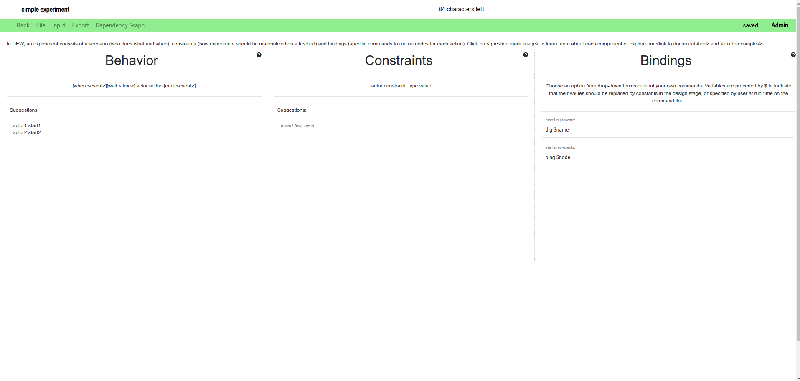
Experiment name
- The name of the experiment is displayed on the top left corner of the page.
- To edit the name, click on the name and update the text. (just like google docs)
- The name can be a maximum of 101 characters. The number of characters remaining is shown to the right of the name.
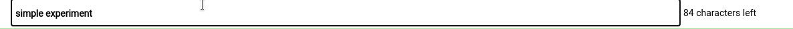
Menu bar
- The menu bar is colored green when the experiment does not contain any unsaved changes.
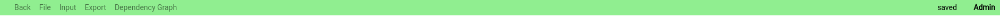
- It is colored grey if the experiment contains unsaved changes. The status is also shown next to the access level to the right.
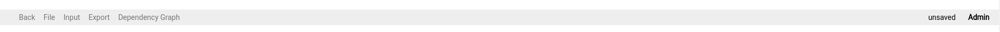
- The access you have with the experiment is shown in the rightmost column.
- The various buttons and their functions are as follows
Back button
- Click on the back button to go to the dashboard. Alternatively, you can use the back button in the browser.
File menu
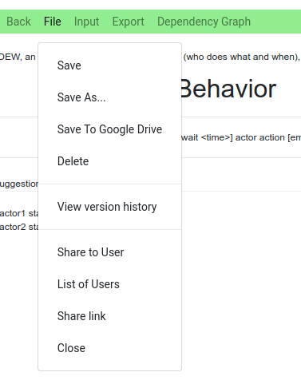
- This menu contains a number of file related operations. They are -
Save
- Clicking on save will save the current experiment to the database.
Save to google drive
- This button allows you to save the experiment to google drive. The experiment is saved in DEW format.
- The user will have a top level directory called “Distributed Experiment Workflows”.
- Inside the top level directory, we have folders created for each experiment.
- Files related to the experiment will be contained in the experiment’s folder
- For example, if we have an experiment named "test", the dew file is located at
MyDrive > Distributed Experiment Workflows > test > test.dew
Delete
- Deletes the experiment.
Version history
- View the changes done previously to the experiment.
- To revert to a particular version, click on the revert button
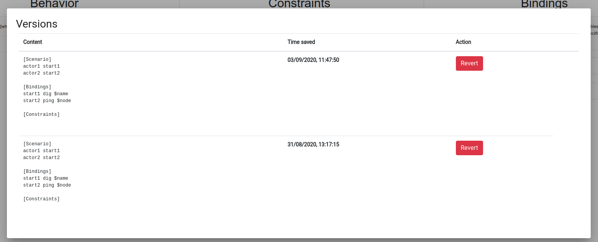
Share to user
- Share the experiment to another DEW user for access
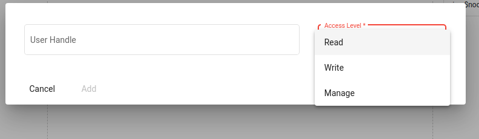
List of users
- View and manage the list of users who can access the experiment
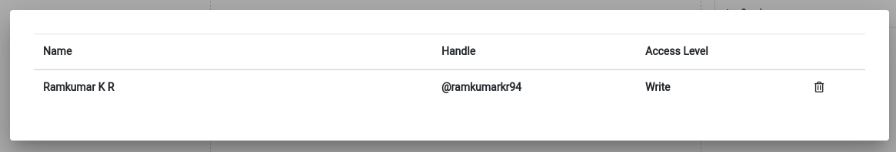
Share link
- Share the experiment to the public by generating a unique link
Close
- Close the experiment and go back to the dashboard
Create
- When the experiment is not saved at all, you get a create button which saves the experiment.
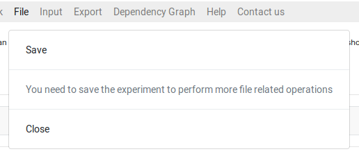
Input
This menu allows the user to upload an experiment using different methods.
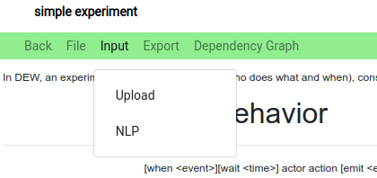
Upload
Upload DEW files to load the experiment. For example, the dew file saved in google drive can be used for upload.
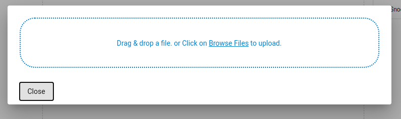
NLP
- Write using natural language to generate DEW statements. The idea is to just type in the requirements and the appropriate DEW file is generated.
- This feature is currently experimental and may not work as expected for all cases.
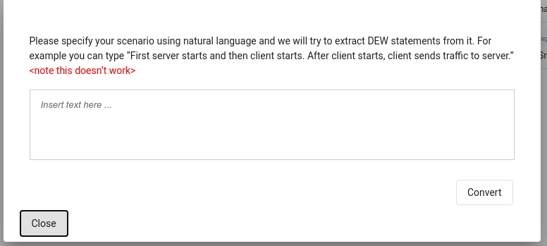
Export
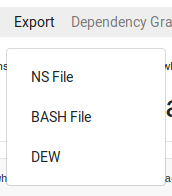
This menu is used to export the experiment to different formats
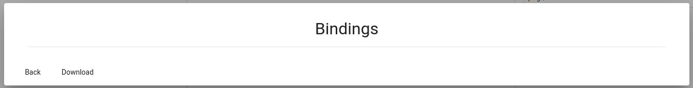
NS file
- Download the NS file for the current experiment
BASH file
- Download the Bash scripts for running the given experiment
Dependency graph
- In order to understand the experiment better, we have a graph view which displays the experiment as a flowchart.
- The graph viewer also supports editing edges.
- To access the graph, click on the Dependency graph option in the menu bar.
- To go back to the experiment, click on the Experiment option in the menu bar.
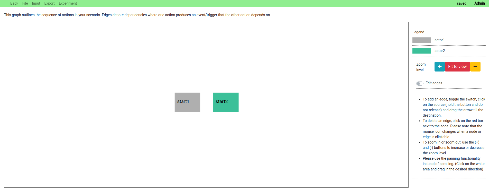
Editing edges
- To add an edge, toggle the switch, click on the source (hold the button and do not release) and drag the arrow till the destination.
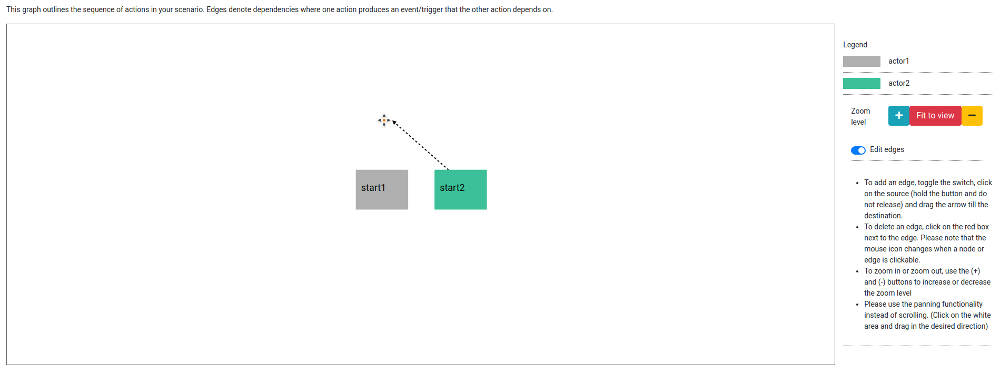
- To delete an edge, click on the red box next to the edge. Please note that the mouse icon changes when a node or edge is clickable.
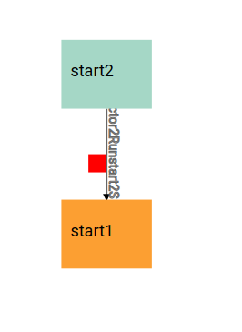
Zoom and scroll
- To zoom in or zoom out, use the (+) and (-) buttons to increase or decrease the zoom level
- Please use the panning functionality instead of scrolling. (Click on the white area and drag in the desired direction)
Behavior, Constraints, and Bindings
- In DEW, an experiment consists of a scenario (who does what and when), constraints (how experiment should be materialized on a testbed) and bindings (specific commands to run on nodes for each action).
Behavior
- Behavior defines the steps to be executed during this experiment.
- Behavior statements will be in the form of
[when <event>][wait <time>] actor action [emit <event>]
- For example:
actor0 start_log
wait t0 actor1 legitimate
when stop_attack_done wait t3 actor1 stop_legitimate emit stop_legitimate_done
- As you start typing there will be auto-suggestion displayed near the top of the text area.
- Press tab to use the first auto suggested word. It will append the word near the cursor in the textarea.
- There will also be suggestion displayed along with suggested text. This will help you to write the next word or phrase.
Constraints
- The constraints section defines all the constraints for this experiment.
- The statements will be in the form of
actor constraint_type value
- The allowed constraint types are
- os
- num
- link
- lan
- interfaces
- location
- nodetype
- For example:
os server ubuntu
num attacker 3
lan client attacker
link router server
- As you start typing there will be auto-suggestion displayed near the top of the text area.
- Press tab to use the first auto suggested word. It will append the word near the cursor in the textarea.
- There will also be suggestion displayed along with suggested text. This will help you to write the next word or phrase.
Bindings
- Define all the constraints for this experiment.
- Choose an option from drop-down boxes or input your own commands. Variables are preceded by
$to indicate that their values should be replaced by constants in the design stage, or specified by user at run-time on the command line. - For example:
install_iperf apt-get install iperf -y
install_tcpdump apt-get install tcpdump -y
install_flooder /scripts/common/install_flooder.sh
start_server iperf -s
- As you start typing behavior above this area will be populated with the terms which require definition for the experiment to execute.